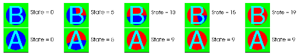

A padded index database correlation, like any other database correlation, involves multiple input databases where each database potentially has a different number of time states. A padded index database correlation has as many time states as the input database with the largest number of time states. All other input databases that have fewer time states than the longest database have their last time state repeated until they have the same number of time states as the input database with the largest number of time states. Using the example databases A and B, since B has 20 time states and A only has 10 time states, database A will have its last time state repeated 10 times to make up the difference in time states between A and B. Note how database A's last time state is repeated in Figure figure.
|  |
| Figure 7 |